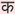

{kind=link}
Table Of Contents
Text Input¶
New in version 1.0.4.

The TextInput widget provides a box of editable plain text.
Unicode, multiline, cursor navigation, selection and clipboard features are supported.
Note
Two different coordinate systems are used with TextInput:
- (x, y) - coordinates in pixels, mostly used for rendering on screen.
- (row, col) - cursor index in characters / lines, used for selection and cursor movement.
Usage example¶
To create a multiline textinput (‘enter’ key adds a new line):
from kivy.uix.textinput import TextInput
textinput = TextInput(text='Hello world')
To create a singleline textinput, set the multiline property to False (‘enter’ key will defocus the textinput and emit on_text_validate event):
def on_enter(instance, value):
print('User pressed enter in', instance)
textinput = TextInput(text='Hello world', multiline=False)
textinput.bind(on_text_validate=on_enter)
The textinput’s text is stored on its TextInput.text property. To run a callback when the text changes:
def on_text(instance, value):
print('The widget', instance, 'have:', value)
textinput = TextInput()
textinput.bind(text=on_text)
You can ‘focus’ a textinput, meaning that the input box will be highlighted and keyboard focus will be requested:
textinput = TextInput(focus=True)
The textinput is defocused if the ‘escape’ key is pressed, or if another widget requests the keyboard. You can bind a callback to the focus property to get notified of focus changes:
def on_focus(instance, value):
if value:
print('User focused', instance)
else:
print('User defocused', instance)
textinput = TextInput()
textinput.bind(focus=on_focus)
Selection¶
The selection is automatically updated when the cursor position changes. You can get the currently selected text from the TextInput.selection_text property.
Filtering¶
You can control which text can be added to the TextInput by overwriting TextInput.insert_text().Every string that is typed, pasted or inserted by any other means to the TextInput is passed through this function. By overwriting it you can reject or change unwanted characters.
For example, to write only in capitalized characters:
class CapitalInput(TextInput):
def insert_text(self, substring, from_undo=False):
s = substring.upper()
return super(CapitalInput, self).insert_text(s, from_undo=from_undo)
Or to only allow floats (0 - 9 and a single period):
class FloatInput(TextInput):
pat = re.compile('[^0-9]')
def insert_text(self, substring, from_undo=False):
pat = self.pat
if '.' in self.text:
s = re.sub(pat, '', substring)
else:
s = '.'.join([re.sub(pat, '', s) for s in substring.split('.', 1)])
return super(FloatInput, self).insert_text(s, from_undo=from_undo)
Default shortcuts¶
| Shortcuts | Description |
| Left | Move cursor to left |
| Right | Move cursor to right |
| Up | Move cursor to up |
| Down | Move cursor to down |
| Home | Move cursor at the beginning of the line |
| End | Move cursor at the end of the line |
| PageUp | Move cursor to 3 lines before |
| PageDown | Move cursor to 3 lines after |
| Backspace | Delete the selection or character before the cursor |
| Del | Delete the selection of character after the cursor |
| Shift + <dir> | Start a text selection. Dir can be Up, Down, Left, Right |
| Control + c | Copy selection |
| Control + x | Cut selection |
| Control + p | Paste selection |
| Control + a | Select all the content |
| Control + z | undo |
| Control + r | redo |
- class kivy.uix.textinput.TextInput(**kwargs)[source]¶
Bases: kivy.uix.behaviors.FocusBehavior, kivy.uix.widget.Widget
TextInput class. See module documentation for more information.
Events : - on_text_validate
Fired only in multiline=False mode when the user hits ‘enter’. This will also unfocus the textinput.
- on_double_tap
Fired when a double tap happens in the text input. The default behavior selects the text around the cursor position. More info at on_double_tap().
- on_triple_tap
Fired when a triple tap happens in the text input. The default behavior selects the line around the cursor position. More info at on_triple_tap().
- on_quad_touch
Fired when four fingers are touching the text input. The default behavior selects the whole text. More info at on_quad_touch().
Warning
When changing a TextInput property that requires re-drawing, e.g. modifying the text, the updates occur on the next clock cycle and not instantly. This might cause any changes to the TextInput that occur between the modification and the next cycle to be ignored, or to use previous values. For example, after a update to the text, changing the cursor in the same clock frame will move it using the previous text and will likely end up in an incorrect position. The solution is to schedule any updates to occur on the next clock cycle using schedule_once().
Note
keyboard_mode, show_keyboard(), hide_keyboard(), and input_type, have been removed from TextInput since they are now inherited from FocusBehavior.
Changed in version 1.9.0: TextInput now inherits from FocusBehavior.
Changed in version 1.7.0: on_double_tap, on_triple_tap and on_quad_touch events added.
- allow_copy¶
Decides whether to allow copying the text.
New in version 1.8.0.
allow_copy is a BooleanProperty and defaults to True.
- auto_indent¶
Automatically indent multiline text.
New in version 1.7.0.
auto_indent is a BooleanProperty and defaults to False.
- background_active¶
Background image of the TextInput when it’s in focus.
New in version 1.4.1.
background_active is a StringProperty and defaults to ‘atlas://data/images/defaulttheme/textinput_active’.
- background_color¶
Current color of the background, in (r, g, b, a) format.
New in version 1.2.0.
background_color is a ListProperty and defaults to [1, 1, 1, 1] (white).
- background_disabled_active¶
Background image of the TextInput when it’s in focus and disabled.
New in version 1.8.0.
background_disabled_active is a StringProperty and defaults to ‘atlas://data/images/defaulttheme/textinput_disabled_active’.
- background_disabled_normal¶
Background image of the TextInput when disabled.
New in version 1.8.0.
background_disabled_normal is a StringProperty and defaults to ‘atlas://data/images/defaulttheme/textinput_disabled’.
- background_normal¶
Background image of the TextInput when it’s not in focus.
New in version 1.4.1.
background_normal is a StringProperty and defaults to ‘atlas://data/images/defaulttheme/textinput’.
- border¶
Border used for BorderImage graphics instruction. Used with background_normal and background_active. Can be used for a custom background.
New in version 1.4.1.
It must be a list of four values: (top, right, bottom, left). Read the BorderImage instruction for more information about how to use it.
border is a ListProperty and defaults to (4, 4, 4, 4).
- copy(data='')[source]¶
Copy the value provided in argument data into current clipboard. If data is not of type string it will be converted to string. If no data is provided then current selection if present is copied.
New in version 1.8.0.
- cursor¶
Tuple of (row, col) values indicating the current cursor position. You can set a new (row, col) if you want to move the cursor. The scrolling area will be automatically updated to ensure that the cursor is visible inside the viewport.
cursor is an AliasProperty.
- cursor_blink¶
This property is used to blink the cursor graphic. The value of cursor_blink is automatically computed. Setting a value on it will have no impact.
cursor_blink is a BooleanProperty and defaults to False.
- cursor_col¶
Current column of the cursor.
cursor_col is an AliasProperty to cursor[0], read-only.
- cursor_color¶
Current color of the cursor, in (r, g, b, a) format.
New in version 1.9.0.
cursor_color is a ListProperty and defaults to [1, 0, 0, 1].
- cursor_pos¶
Current position of the cursor, in (x, y).
cursor_pos is an AliasProperty, read-only.
- cursor_row¶
Current row of the cursor.
cursor_row is an AliasProperty to cursor[1], read-only.
- cut()[source]¶
Copy current selection to clipboard then delete it from TextInput.
New in version 1.8.0.
- disabled_foreground_color¶
Current color of the foreground when disabled, in (r, g, b, a) format.
New in version 1.8.0.
disabled_foreground_color is a ListProperty and defaults to [0, 0, 0, 5] (50% transparent black).
- do_backspace(from_undo=False, mode='bkspc')[source]¶
Do backspace operation from the current cursor position. This action might do several things:
- removing the current selection if available.
- removing the previous char and move the cursor back.
- do nothing, if we are at the start.
- do_cursor_movement(action)[source]¶
Move the cursor relative to it’s current position. Action can be one of :
- cursor_left: move the cursor to the left
- cursor_right: move the cursor to the right
- cursor_up: move the cursor on the previous line
- cursor_down: move the cursor on the next line
- cursor_home: move the cursor at the start of the current line
- cursor_end: move the cursor at the end of current line
- cursor_pgup: move one “page” before
- cursor_pgdown: move one “page” after
- do_redo()[source]¶
Do redo operation.
New in version 1.3.0.
This action re-does any command that has been un-done by do_undo/ctrl+z. This function is automatically called when ctrl+r keys are pressed.
- do_undo()[source]¶
Do undo operation.
New in version 1.3.0.
This action un-does any edits that have been made since the last call to reset_undo(). This function is automatically called when ctrl+z keys are pressed.
- focus¶
If focus is True, the keyboard will be requested and you can start entering text into the textinput.
focus is a BooleanProperty and defaults to False.
Note
Selection is cancelled when TextInput is focused. If you need to show selection when TextInput is focused, you should delay (use Clock.schedule) the call to the functions for selecting text (select_all, select_text).
- ..versionchanged:: 1.9.0
- TextInput now inherits from FocusBehavior and focus is now an alias for focused. Setting either one will also set the other.
- font_name¶
Filename of the font to use. The path can be absolute or relative. Relative paths are resolved by the resource_find() function.
Warning
Depending on your text provider, the font file may be ignored. However, you can mostly use this without problems.
If the font used lacks the glyphs for the particular language/symbols you are using, you will see ‘[]’ blank box characters instead of the actual glyphs. The solution is to use a font that has the glyphs you need to display. For example, to display , use a font like freesans.ttf that has the glyph.
font_name is a StringProperty and defaults to ‘DroidSans’.
- font_size¶
Font size of the text in pixels.
font_size is a NumericProperty and defaults to 10.
- foreground_color¶
Current color of the foreground, in (r, g, b, a) format.
New in version 1.2.0.
foreground_color is a ListProperty and defaults to [0, 0, 0, 1] (black).
- handle_image_left¶
Image used to display the Left handle on the TextInput for selection.
New in version 1.8.0.
handle_image_left is a StringProperty and defaults to ‘atlas://data/images/defaulttheme/selector_left’.
- handle_image_middle¶
Image used to display the middle handle on the TextInput for cursor positioning.
New in version 1.8.0.
handle_image_middle is a StringProperty and defaults to ‘atlas://data/images/defaulttheme/selector_middle’.
- handle_image_right¶
Image used to display the Right handle on the TextInput for selection.
New in version 1.8.0.
handle_image_right is a StringProperty and defaults to ‘atlas://data/images/defaulttheme/selector_right’.
- hint_text¶
Hint text of the widget.
Shown if text is ‘’ and focus is False.
New in version 1.6.0.
hint_text a StringProperty and defaults to ‘’.
- hint_text_color¶
Current color of the hint_text text, in (r, g, b, a) format.
New in version 1.6.0.
hint_text_color is a ListProperty and defaults to [0.5, 0.5, 0.5, 1.0] (grey).
- input_filter¶
Filters the input according to the specified mode, if not None. If None, no filtering is applied.
New in version 1.9.0.
input_filter is an ObjectProperty and defaults to None. Can be one of None, ‘int’ (string), or ‘float’ (string), or a callable. If it is ‘int’, it will only accept numbers. If it is ‘float’ it will also accept a single period. Finally, if it is a callable it will be called with two parameter; the string to be added and a bool indicating whether the string is a result of undo (True). The callable should return a new substring that will be used instead.
- insert_text(substring, from_undo=False)[source]¶
Insert new text at the current cursor position. Override this function in order to pre-process text for input validation.
- keyboard_suggestions¶
If True provides auto suggestions on top of keyboard. This will only work if input_type is set to text.
New in version 1.8.0.
keyboard_suggestions is a BooleanProperty defaults to True.
- line_height¶
Height of a line. This property is automatically computed from the font_name, font_size. Changing the line_height will have no impact.
Note
line_height is the height of a single line of text. Use minimum_height, which also includes padding, to get the height required to display the text properly.
line_height is a NumericProperty, read-only.
- line_spacing¶
Space taken up between the lines.
New in version 1.8.0.
line_spacing is a NumericProperty and defaults to 0.
- minimum_height¶
Minimum height of the content inside the TextInput.
New in version 1.8.0.
minimum_height is a readonly AliasProperty.
- multiline¶
If True, the widget will be able show multiple lines of text. If False, the “enter” keypress will defocus the textinput instead of adding a new line.
multiline is a BooleanProperty and defaults to True.
- on_double_tap()[source]¶
This event is dispatched when a double tap happens inside TextInput. The default behavior is to select the word around the current cursor position. Override this to provide different behavior. Alternatively, you can bind to this event to provide additional functionality.
- on_quad_touch()[source]¶
This event is dispatched when four fingers are touching inside TextInput. The default behavior is to select all text. Override this to provide different behavior. Alternatively, you can bind to this event to provide additional functionality.
- on_triple_tap()[source]¶
This event is dispatched when a triple tap happens inside TextInput. The default behavior is to select the line around current cursor position. Override this to provide different behavior. Alternatively, you can bind to this event to provide additional functionality.
- padding¶
Padding of the text: [padding_left, padding_top, padding_right, padding_bottom].
padding also accepts a two argument form [padding_horizontal, padding_vertical] and a one argument form [padding].
Changed in version 1.7.0: Replaced AliasProperty with VariableListProperty.
padding is a VariableListProperty and defaults to [6, 6, 6, 6].
- padding_x¶
Horizontal padding of the text: [padding_left, padding_right].
padding_x also accepts a one argument form [padding_horizontal].
padding_x is a VariableListProperty and defaults to [0, 0]. This might be changed by the current theme.
Deprecated since version 1.7.0: Use padding instead.
- padding_y¶
Vertical padding of the text: [padding_top, padding_bottom].
padding_y also accepts a one argument form [padding_vertical].
padding_y is a VariableListProperty and defaults to [0, 0]. This might be changed by the current theme.
Deprecated since version 1.7.0: Use padding instead.
- password¶
If True, the widget will display its characters as the character ‘*’.
New in version 1.2.0.
password is a BooleanProperty and defaults to False.
- paste()[source]¶
Insert text from system Clipboard into the TextInput at current cursor position.
New in version 1.8.0.
- readonly¶
If True, the user will not be able to change the content of a textinput.
New in version 1.3.0.
readonly is a BooleanProperty and defaults to False.
- scroll_x¶
X scrolling value of the viewport. The scrolling is automatically updated when the cursor is moved or text changed. If there is no user input, the scroll_x and scroll_y properties may be changed.
scroll_x is a NumericProperty and defaults to 0.
- scroll_y¶
Y scrolling value of the viewport. See scroll_x for more information.
scroll_y is a NumericProperty and defaults to 0.
- select_text(start, end)[source]¶
Select a portion of text displayed in this TextInput.
New in version 1.4.0.
Parameters : - start
Index of textinput.text from where to start selection
- end
Index of textinput.text till which the selection should be displayed
- selection_color¶
Current color of the selection, in (r, g, b, a) format.
Warning
The color should always have an “alpha” component less than 1 since the selection is drawn after the text.
selection_color is a ListProperty and defaults to [0.1843, 0.6549, 0.8313, .5].
- selection_from¶
If a selection is in progress or complete, this property will represent the cursor index where the selection started.
Changed in version 1.4.0: selection_from is an AliasProperty and defaults to None, readonly.
- selection_text¶
Current content selection.
selection_text is a StringProperty and defaults to ‘’, readonly.
- selection_to¶
If a selection is in progress or complete, this property will represent the cursor index where the selection started.
Changed in version 1.4.0: selection_to is an AliasProperty and defaults to None, readonly.
- tab_width¶
By default, each tab will be replaced by four spaces on the text input widget. You can set a lower or higher value.
tab_width is a NumericProperty and defaults to 4.
- text¶
Text of the widget.
Creation of a simple hello world:
widget = TextInput(text='Hello world')
If you want to create the widget with an unicode string, use:
widget = TextInput(text=u'My unicode string')
- use_bubble¶
Indicates whether the cut/copy/paste bubble is used.
New in version 1.7.0.
use_bubble is a BooleanProperty and defaults to True on mobile OS’s, False on desktop OS’s.
- use_handles¶
Indicates whether the selection handles are displayed.
New in version 1.8.0.
use_handles is a BooleanProperty and defaults to True on mobile OS’s, False on desktop OS’s.
- write_tab¶
Whether the tab key should move focus to the next widget or if it should enter a tab in the TextInput. If True a tab will be written, otherwise, focus will move to the next widget.
New in version 1.9.0.
write_tab is a BooleanProperty and defaults to True.